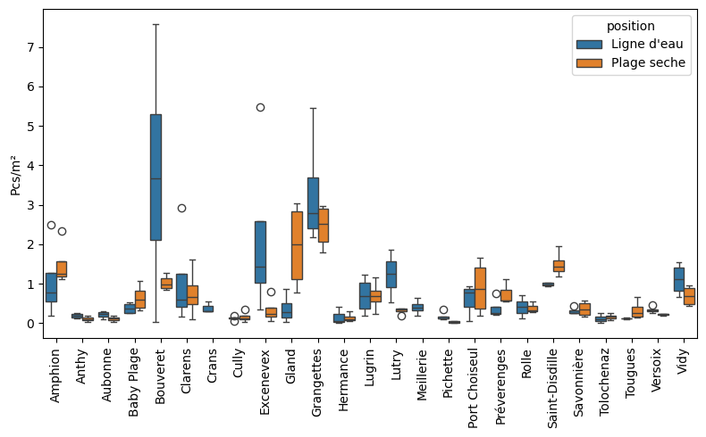

Annexe VII: Macroplastiques par plage et position#
Résultats agrégés par objet, position et échantillon
| Plage | Position | Quantité | Échantillon | |
|---|---|---|---|---|
| G24 | Amphion | 1 | 2 | ('amphion', '01.02.2022') |
| G24 | Amphion | 2 | 42 | ('amphion', '01.02.2022') |
| G66 | Amphion | 2 | 7 | ('amphion', '01.02.2022') |
| G131 | Amphion | 2 | 1 | ('amphion', '01.02.2022') |
| G31 | Amphion | 1 | 2 | ('amphion', '01.02.2022') |
Nombre cumulé d’échantillons et particules par plage#
| Échantillon | Quantité | % échantillon | % quantité | Moyenne | |
|---|---|---|---|---|---|
| Amphion | 4 | 2'454 | 0,04 | 0,09 | 1,28 |
| Anthy | 4 | 144 | 0,04 | 0,01 | 0,15 |
| Aubonne | 4 | 185 | 0,04 | 0,01 | 0,17 |
| Baby plage | 4 | 1'161 | 0,04 | 0,04 | 0,51 |
| Bouveret | 4 | 3'285 | 0,04 | 0,12 | 2,38 |
| Clarens | 4 | 1'123 | 0,04 | 0,04 | 0,92 |
| Crans | 3 | 19 | 0,03 | 0,00 | 0,40 |
| Cully | 4 | 42 | 0,04 | 0,00 | 0,15 |
| Excenevex | 4 | 3'905 | 0,04 | 0,14 | 1,25 |
| Gland | 4 | 206 | 0,04 | 0,01 | 1,16 |
| Grangettes | 4 | 3'597 | 0,04 | 0,13 | 2,88 |
| Hermance | 4 | 200 | 0,04 | 0,01 | 0,15 |
| Lugrin | 4 | 643 | 0,04 | 0,02 | 0,70 |
| Lutry | 4 | 678 | 0,04 | 0,02 | 0,77 |
| Meillerie | 4 | 87 | 0,04 | 0,00 | 0,41 |
| Pichette | 4 | 49 | 0,04 | 0,00 | 0,11 |
| Port choiseul | 4 | 1'361 | 0,04 | 0,05 | 0,77 |
| Préverenges | 4 | 2'397 | 0,04 | 0,09 | 0,54 |
| Rolle | 3 | 1'079 | 0,03 | 0,04 | 0,40 |
| Saint-disdille | 4 | 1'851 | 0,04 | 0,07 | 1,25 |
| Savonnière | 4 | 575 | 0,04 | 0,02 | 0,34 |
| Tolochenaz | 4 | 75 | 0,04 | 0,00 | 0,14 |
| Tougues | 4 | 642 | 0,04 | 0,02 | 0,23 |
| Versoix | 4 | 175 | 0,04 | 0,01 | 0,34 |
| Vidy | 4 | 1'560 | 0,04 | 0,06 | 0,91 |
Fig. 12 #
Abondance moyenne par échantillon et plage#
| Min | 25% | 50% | 75% | Max | Moyenne | Écart-type | |
|---|---|---|---|---|---|---|---|
| Pcs/m² | 0,01 | 0,18 | 0,37 | 0,94 | 7,59 | 0,76 | 1,04 |
Fig. 13 #
Abondance moyenne par position#
| Échantillons | Moyenne | Écart type | Min | 25% | 50% | 75% | Max | |
|---|---|---|---|---|---|---|---|---|
| Ligne d'eau | 95 | 0,83 | 1,26 | 0,02 | 0,18 | 0,36 | 0,91 | 7,59 |
| Plage seche | 88 | 0,69 | 0,73 | 0,01 | 0,17 | 0,40 | 1,07 | 3,05 |
Fig. 14 #
| Pcs/m² | ||
|---|---|---|
| position | Ligne d'eau | Plage seche |
| Amphion | 1,06 | 1,49 |
| Anthy | 0,19 | 0,11 |
| Aubonne | 0,22 | 0,11 |
| Baby plage | 0,38 | 0,64 |
| Bouveret | 3,74 | 1,03 |
| Clarens | 1,07 | 0,77 |
| Crans | 0,40 | nan |
| Cully | 0,13 | 0,16 |
| Excenevex | 2,18 | 0,33 |
| Gland | 0,37 | 1,95 |
| Grangettes | 3,30 | 2,45 |
| Hermance | 0,16 | 0,14 |
| Lugrin | 0,70 | 0,69 |
| Lutry | 1,23 | 0,32 |
| Meillerie | 0,41 | nan |
| Pichette | 0,17 | 0,03 |
| Port choiseul | 0,59 | 0,90 |
| Préverenges | 0,38 | 0,75 |
| Rolle | 0,41 | 0,39 |
| Saint-disdille | 0,99 | 1,50 |
| Savonnière | 0,31 | 0,36 |
| Tolochenaz | 0,12 | 0,17 |
| Tougues | 0,12 | 0,33 |
| Versoix | 0,34 | 0,22 |
| Vidy | 1,12 | 0,70 |
Distributions#

Git repo: https://github.com/AssociationSauvegardeLeman/plastock.git
Git branch: jun14
seaborn : 0.13.1
numpy : 1.26.3
pandas : 2.0.3
matplotlib: 3.8.2